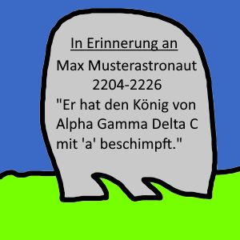
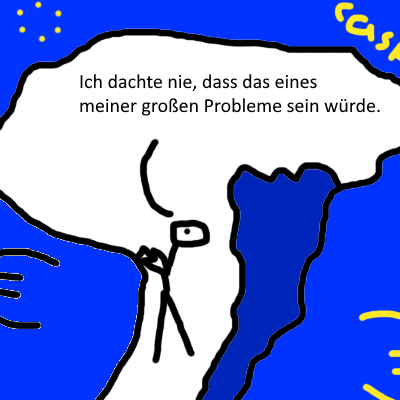
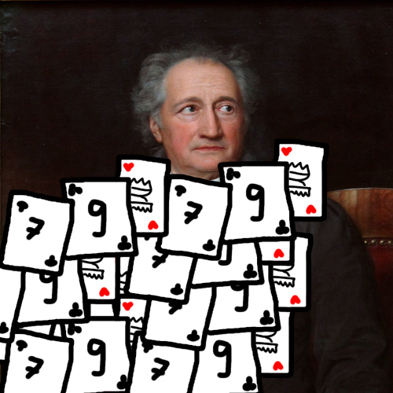

Schon seit Anbeginn der modernen Menschheit(altes Ägypten) suchen die Menschen Wege und Möglichkeiten ihre Worte zu Papyrus (𓍃𓍃!) zu bringen. Jedoch stellt sich oft eine Hürde in den Weg. Auf welche Symbole einigt man sich? Was bedeutet ein Symbol? Ist ein Buchstabe der wie ein "a" aussieht in einem anderen Alphabet vielleicht eine schlimme Beleidigung?

Um dieses alte Problem zu lösen stelle ich hiermit ein neues System vor. Das System das eint! Das allseits beliebte Spiel Skat besteht aus 32 Karten, davon sind jeweils 8 einem Zeichen (Kreuz, Piek, Herz, Karo) zugeordnet, jedes dieser Zeichen, auch Farben genannt, hat dann jeweils 8 Karten (7,8,9,10,Bube,Dame,König,Ass). Wir haben also 32 einzigartige Karten, das schreit nach einem Anordungsproblem, mit der Fakultät von 32, 32!, können wir errechnen wie viele Möglichkeiten es wohl gibt diese 32 Karten anzuordnen. 32! = ca. 2,6x10^35. Das heißt wir haben 2,6 hoch 35 mögliche Zustände die Karten anzuordnen. Das sind 260 Dezillionen Möglichkeiten.
Veranschaulichen wir mal diese 260 Dezillionen: Wenn jeder Mensch auf der Welt seine eigene Welt mit nochmal 8 Millarden Menschen hätte und dann bekommt jeder einen gleichen Anteil an diesen 260 Dezillionen (sagen wir es sind €), dann hätte jeder Mensch 4,11 x10^15 Euro, das sind ca.4 Billiarde Euro, davon könnte man auf einer einzelnen dieser Modell-Erden 4,2 Billiarde/ 101 Billionen = ca. 42-mal das Bruttoweltprodukt von 2022 "erwirtschaften".

Naja ich schweife ab. Eigentlich wollte ich nur sagen, dass man damit quasi jedes erdenkliche Zeichen symbolisieren könnte.
Zur Umsetzung: Jeder Buchstabe wird mit einem ausgelegten Deck an Karten dargestellt. Zur Vereinfachung darf dieses gnädigerweise auch abgedruckt werden. Einziger Negativpunkt wären die massiven Kosten beim Schreiben eines Buches. Goethes Faust hat etwas mehr als 191.000 Zeichen, würde man das in Skat-Spielkarten darstellen, hätte Goethe wesentlich mehr finanzielle Ressourcen benötigt. Nehmen wir an, dass eine Packung Skat-Spielkarten ungefähr 2€ kostet, dann hätte Goethe etwa (191.000 x 2) 382.000€ ausgeben müssen um sein Buch zu schreiben. Insgesamt hätte er dann etwa 6 Millionen Karten gebraucht (191.000 x 32).

Aber abgesehen von dieser kleinen Unannehmlichkeit schlage ich dieses Codierungs-System jetzt generell vor.
Zurück zum Archiv